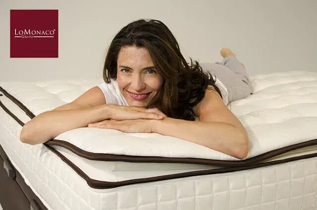
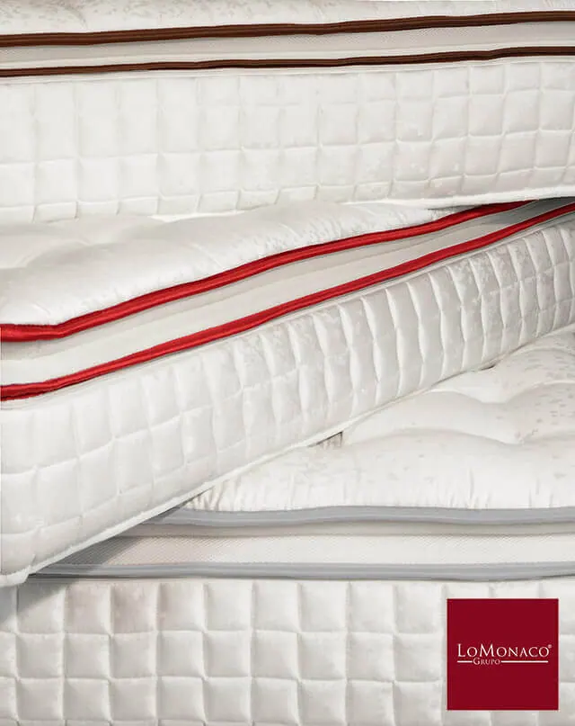
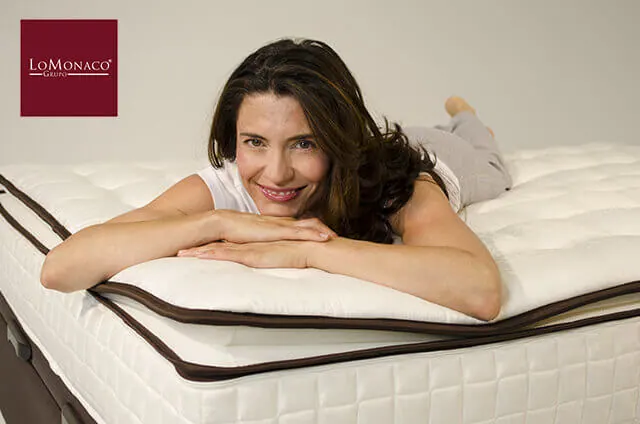

Cambio de colchón ¿Cuándo es el momento?

Todo esto es fruto la experiencia que da el trabajo diario con cada uno de nuestros clientes, persiguiendo el objetivo de hacerles conseguir un descanso perfecto.
Los problemas que nos hacen barajar la posibilidad de adquirir un nuevo colchón, giran en torno a situaciones similares. Efectivamente, como ya habrás imaginado, también en Grupo Lo Monaco somos expertos en buscar soluciones:
- El colchón es muy duro o muy blando: tu colchón te hace dar vueltas cada noche, te hundes o el material se te clava, no encuentras la postura idónea y te pasas las noches en blanco…. Está claro, lo que se necesita es un colchón que proporcione firmeza media y un material que se adapte a los contornos. Recuerda: es el colchón el que se debe adaptar a ti y no al revés. Otro punto a tener en cuenta es que la suma del colchón y la base, ayuda a configurar la firmeza final, por eso, revisa tu somier de láminas o canapé para comprobar sus características y conformar este parámetro del que te hablamos.
- Dolor en la parte baja de la espalda: es un dolor que se manifiesta cuando llevamos varias horas acostados, nos levantamos con la sensación de no haber descansado. Este punto está íntimamente relacionado con lo anterior, el colchón debe adaptarse a nosotros y no al contrario, permitiendo que la columna descanse en una posición natural. Posturas forzadas provocadas por excesiva rigidez o por inconsistencia del material hacen aparecer este tipo de molestias, por lo que de nuevo hacemos hincapié en la importancia de elegir un colchón que proporcione una firmeza media. Para solucionar este aspecto y el anterior, en nuestro catálogo de productos disponemos de una amplia gama de colchones de firmeza media y bases en diferentes acabados, que otorgan diferentes sensaciones siempre dentro de la firmeza media, para que encuentres un equipo de descanso que se adapte a ti.
- Evidencias que ponen de manifiesto la deformación en el colchón: En ocasiones nuestros clientes nos comentan que le ven bultos o hundimientos en ciertas zonas a sus colchones. Son varios los motivos que hacen que un colchón este deformado: el más frecuente, el uso prolongado, es decir, el colchón tiene más de diez años o le hemos dado un mal uso (de esto hablaremos en el punto siguiente). El colchón tiene una vida útil, la cual está totalmente desaconsejado alargar.

Problemas con el colchón por mal uso del mismo: Podríamos hablar de deformaciones por una superficie de apoyo inadecuada, rotura de la estructura del núcleo por un uso indebido (los niños han saltado encima del colchón), colocar el producto en una zona exterior, almacenar el colchón indebidamente, deterioros provocados por agentes medioambientales… Por eso, es importante siempre seguir las recomendaciones del fabricante y para ello los colchones de Grupo Lo Monaco, incorporan un documento adjunto, con recomendaciones de uso y de qué no hacer nunca con tu colchón.- Dormir solo o en pareja: ¿Ha cambiado tu situación sentimental o tu estado civil ;)? ¿Dormías sólo y ahora acompañado? Tu colchón individual ya no te sirve, y en Grupo Lo Monaco te ofrecemos una amplia oferta de medidas dobles para que duermas igual de bien acompañado que cuando lo hacías solo. Además, gracias a las propias características de los núcleos de Lo Monaco, te aseguramos completa diferenciación de lechos, esto es, que los movimientos de tu acompañante no perturbarán tu sueño.

El “peque” ya no es tan “peque” (la adolescencia): el niño ha crecido en talla y peso, ¿Es el colchón que tiene adecuado o no? Seguramente habrá que cambiarlo por varios motivos, pero sobre todo porque quizás se le haya quedado corto ¿Y si es un chico muy alto? Tranquilos, consulta por nuestras medidas de largo especiales, de hasta 210 cm.


- Cambio de domicilio: ¿nos llevamos el colchón antiguo o es el momento de comprar otro? Piensa en el tiempo que tiene de uso y plantéate el renovarlo, consulta por nuestro servicio de retirada de colchones.
- Mi colchón me da calor: busca un colchón que no genere sensaciones de temperatura elevada y piensa en complementar tu descanso con un cubre de lana merina que aísla eficazmente ante cualquier sensación térmica.
Si al leer este artículo te has sentido identificado con alguna de estas situaciones, quizás y aunque no te lo hayas planteado, ha llegado el momento de renovar tu colchón y por ello, permítenos una última recomendación: ponte en manos expertas para cuidar tu descanso.